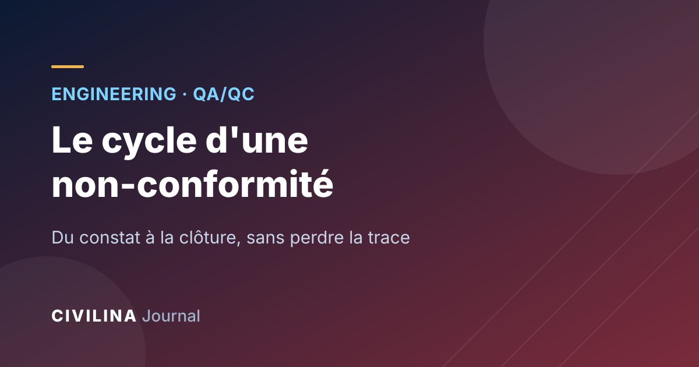

Accueil › Journal › Le cycle d'une non-conformité
Engineering · QA/QCLe cycle d'une non-conformité : du constat à la clôture

Sur un chantier ou dans une usine, les écarts sont inévitables. Ce qui distingue une organisation maîtrisée, ce n'est pas l'absence de non-conformités, c'est la façon dont elle les traite : vite, avec une décision claire, une cause comprise et une preuve de clôture. Voici le cycle complet d'une non-conformité, étape par étape.
Qu'est-ce qu'une non-conformité ?
Dans le vocabulaire de la famille ISO 9000, une non-conformité est simplement la non-satisfaction d'une exigence. L'exigence peut venir d'un plan, d'une spécification du marché, d'une norme applicable, d'une procédure interne ou d'un engagement pris envers le client.
Sur le terrain, plusieurs mots désignent des situations voisines. Les distinguer évite bien des malentendus :
| Terme | Ce qu'il désigne |
|---|---|
| Non-conformité (NC) | Un écart constaté par rapport à une exigence, qui doit être traité et tracé |
| Fiche NCR | Le document qui enregistre la non-conformité et son traitement (Non-Conformance Report) |
| Observation | Un point de vigilance ou un risque d'écart, sans exigence encore dépassée |
| Réserve | Un défaut relevé lors d'une réception, à lever avant ou après la prise de possession selon le contrat |
| Réclamation | Une insatisfaction exprimée par le client, qui peut révéler une non-conformité |
Les huit étapes du cycle
- Détecter et enregistrer. L'écart est constaté lors d'une inspection, d'un essai, d'un audit ou d'une réception. Il est enregistré immédiatement, avec photos et références : ce qui n'est pas écrit n'existe pas.
- Identifier et isoler. On empêche l'utilisation ou la poursuite des travaux sur l'élément concerné : étiquetage, zone de quarantaine, arrêt de l'activité si nécessaire.
- Évaluer. On mesure l'étendue de l'écart et ses conséquences : un élément isolé ou tout un lot ? un enjeu d'aspect, de durabilité ou de sécurité ?
- Décider du traitement. La personne habilitée choisit la disposition à appliquer, après accord du client ou du maître d'œuvre lorsque le contrat l'exige.
- Corriger. La décision est mise en œuvre : reprise, réparation, remplacement.
- Analyser les causes. On cherche pourquoi l'écart s'est produit, pour éviter qu'il se reproduise.
- Agir sur les causes. L'action corrective est définie, avec un responsable et une échéance.
- Vérifier et clôturer. On recontrôle l'élément corrigé, on vérifie plus tard l'efficacité de l'action corrective, puis la non-conformité est clôturée par une personne habilitée.
Les cinq premières étapes traitent le problème ; les trois dernières traitent sa cause. Beaucoup d'organisations s'arrêtent à la cinquième, et voient les mêmes écarts revenir chantier après chantier.
Correction ou action corrective : ne pas confondre
| Correction | Action corrective | |
|---|---|---|
| Objectif | Éliminer la non-conformité détectée | Éliminer la cause, pour éviter qu'elle se reproduise |
| Porte sur | L'élément concerné | Le processus, la méthode, la formation, l'organisation |
| Exemple | Reprendre un élément mal positionné | Ajouter un contrôle avant l'étape qui a produit l'écart |
| Quand | Tout de suite | Après analyse des causes |
Une non-conformité peut nécessiter une correction sans action corrective, si l'écart est isolé et sa cause accidentelle. Mais une même non-conformité qui revient trois fois appelle forcément une action corrective.
Les décisions de traitement possibles
| Décision | Principe | Point de vigilance |
|---|---|---|
| Reprise | Refaire pour obtenir un résultat conforme à l'exigence d'origine | Recontrôler avec le même critère qu'au départ |
| Réparation | Rendre l'élément apte à l'usage, sans forcément revenir à l'état prévu | Souvent soumise à l'accord du client ou du concepteur |
| Acceptation par dérogation | Accepter l'élément en l'état, après justification | Toujours écrite et signée par la partie habilitée ; jamais implicite |
| Déclassement | Utiliser l'élément pour un usage moins exigeant | Garder la traçabilité de la nouvelle destination |
| Rejet ou démolition | Éliminer l'élément non conforme | Documenter la décision et le remplacement |
Pour un élément structurel, une réparation ou une dérogation s'appuie généralement sur l'avis du concepteur ou du bureau d'études, et parfois sur une vérification complémentaire. Ce n'est pas au contrôleur de décider seul d'accepter un écart qui touche la sécurité ou la durabilité de l'ouvrage.
Analyser les causes sans chercher un coupable
Deux outils simples suffisent dans la plupart des cas :
- Les « 5 pourquoi » : on se demande pourquoi l'écart s'est produit, puis pourquoi cette cause a existé, et ainsi de suite jusqu'à atteindre une cause sur laquelle l'organisation peut agir.
- Le diagramme d'Ishikawa (5M) : on examine les causes possibles selon cinq familles : matière, matériel, méthode, main-d'œuvre et milieu.
Une analyse qui conclut systématiquement à « l'erreur humaine » ou au « manque d'attention » est rarement utile : elle ne dit pas ce que l'organisation doit changer. La bonne question est : qu'est-ce qui a rendu cette erreur possible ?
La fiche NCR : ce qu'elle doit contenir
| Rubrique | Contenu |
|---|---|
| Identification | Numéro, date, projet, ouvrage, localisation précise |
| Exigence concernée | Plan, spécification ou norme, avec indice ou édition, et la ligne d'ITP liée |
| Description de l'écart | Ce qui a été constaté, mesuré ou observé ; photos |
| Émetteur | Qui a détecté l'écart et quand |
| Décision de traitement | Disposition retenue, décideur, accord du client si requis |
| Correction | Ce qui a été fait, par qui, quand |
| Analyse des causes | Méthode utilisée et cause retenue |
| Action corrective | Action, responsable, échéance |
| Vérification | Recontrôle, résultat, preuves |
| Clôture | Date, signature de la personne habilitée, vérification d'efficacité prévue |
La fiche NCR boucle la chaîne de preuve de l'ITP : exigence, inspection, constat, décision, correction, recontrôle. Un auditeur doit pouvoir la parcourir sans avoir à poser de questions.
Suivre les non-conformités avec quelques indicateurs
Quatre indicateurs suffisent pour piloter le sujet en revue de projet ou en revue de direction :
- Non-conformités ouvertes, et parmi elles celles qui dépassent leur échéance ;
- Délai moyen de clôture, du constat à la clôture signée ;
- Récurrence par cause, pour repérer les causes qui reviennent ;
- Répartition par lot ou par sous-traitant, pour cibler l'accompagnement.
Un nombre élevé de non-conformités enregistrées n'est pas forcément mauvais signe : il peut traduire un contrôle actif. Ce qui doit alerter, ce sont les non-conformités qui restent ouvertes et celles qui reviennent.
Les erreurs fréquentes
- Corriger sur place sans rien enregistrer « pour gagner du temps ».
- Continuer les travaux sur un élément non conforme avant la décision.
- Accepter un écart oralement, sans dérogation écrite et signée.
- Clôturer une fiche sans recontrôle ni preuve.
- Confondre correction et action corrective, et laisser la cause intacte.
- Utiliser les non-conformités pour désigner des coupables.
Checklist de clôture
- L'exigence non respectée est identifiée, avec sa référence et son édition.
- L'élément concerné a été isolé ou les travaux arrêtés le temps de la décision.
- La décision de traitement est écrite, avec le nom du décideur.
- L'accord du client ou du maître d'œuvre est joint lorsqu'il est requis.
- La correction est réalisée et recontrôlée selon le critère d'origine.
- La cause est analysée et, si nécessaire, une action corrective est lancée.
- Les preuves sont jointes : photos, rapports, PV.
- La clôture est signée par une personne habilitée.
Bien gérée, la non-conformité devient une source d'apprentissage pour toute l'organisation. Mal gérée, elle devient un litige qui attend son heure.
- ISO 9000 — Systèmes de management de la qualité — Principes essentiels et vocabulaire.
- ISO 9001 — Systèmes de management de la qualité — Exigences (maîtrise des éléments de sortie non conformes, non-conformité et action corrective).
- Documents du marché : spécifications, plans d'exécution, plan d'assurance qualité et ITP du projet.
Les modalités de décision, de dérogation et de réception dépendent du contrat de chaque projet. Cet article présente une méthode ; il ne remplace ni les documents du projet, ni le texte des normes.

Ingénieur civil et PMP, fondateur de Civilina. Expérience en management de projet, qualité, QHSE et coordination opérationnelle, en Algérie et à l'international.
Un circuit de non-conformités clair sur vos projets ?
CIVILINA Engineering met en place avec vous les fiches NCR, le circuit de décision et les indicateurs de suivi, dans le cadre de votre plan qualité.
Découvrir CIVILINA Engineering →